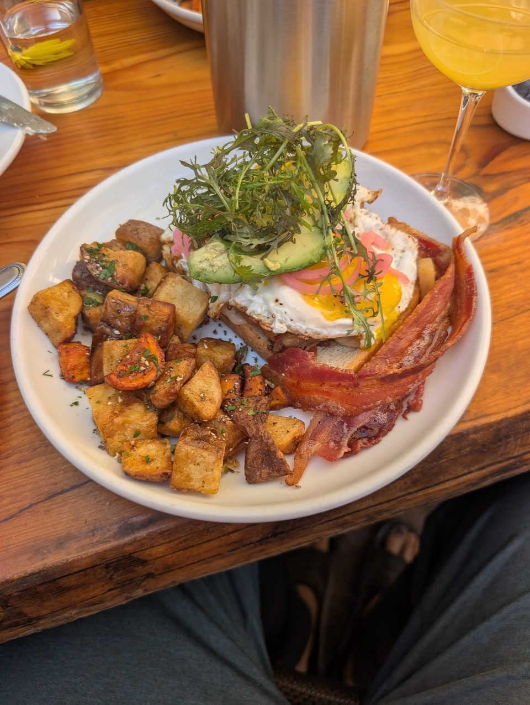

Farm brunch
An omelet of the day's seasonal vegetables, and a potato hash crisp outside and soft inside.
New American · Main Street, Bastrop, TX
Index of the menu
Seasonal brunch, burgers and dinner plates, cooked with harvests from our own farm.

What to order
Dishes worth coming back for.
An omelet of the day's seasonal vegetables, and a potato hash crisp outside and soft inside.

A burger and fries, alongside appetizers and entrees made to order.

Wood smoked black drum Niçoise, tomahawk pork chop and pork belly skewers with tamarind sauce. The list turns over with the season.


4.6 / 5 · 345 Google reviews
1Excellent brunch stop, farm to table freshness is off the chart. I had the omlete which is a daily selection of veggies (farm fresh seasonal) O..today was Oakra, squash, red amber pepper with ricotta .... amazing!!! The fresh potatoe hash... was a delight.. crispy exterior soft inside..perfectly cooked I paired this with a mocktail called strawberry moon.... strawberry lemon and activated charcoal. So refreshing!!!
2I was fortunate to visit Storehouse Bastrop recently for their summer menu. This is such a magical place where they make you feel like home. We were a party of 2 and sat at the bar. Our service was amazing and we chatted the whole time with the bartender and other servers that stopped through.
3This was such a beautiful and charming experience. Everyone was so welcoming and kind. Joyce took amazing care of us and very is very funny too . Loved hearing the history of the restaurant and hearing details of the menu. From the appetizers to entrees , everything was outstanding, especially the burger and fries. Mocktails were absolutely delicious. Can’t wait to return to try more menu items.
About
A historic building and a working farm. The menu follows what the garden provides, so expect a few surprises.
A wood staircase, an antler mount and warm wood tables. Friendly staff.
Beyond the daily menu there are wine dinners, announced on the restaurant's Facebook page.

Visit
813 Main St, Bastrop, TX 78602
Wine dinners are announced on our Facebook page. Check there for dates.